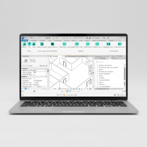
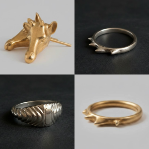
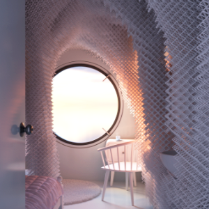
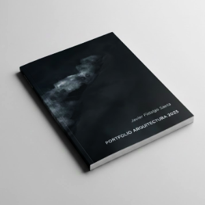
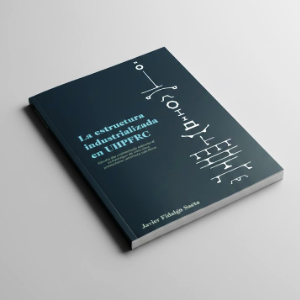
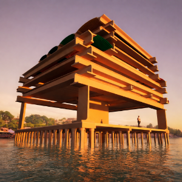
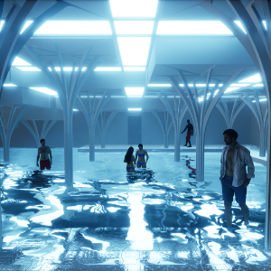

Sobre mí
Soy un arquitecto basado en Madrid con un fuerte interés en la intersección entre diseño y tecnología. Estoy especializado en el desarrollo de proyectos de edificación en entornos BIM, aprovechando al máximo las capacidades de Autodesk Revit y Rhinoceros 3D. No obstante, cuando estos programas se quedan cortos a la hora de abordar flujos de trabajo específicos, soy capaz de desarrollar mis propias herramientas mediante programación gráfica (Revit-Dynamo, Rhino-Grasshopper) o scripting (pyRevit, C# + Revit/Rhino).
Actualmente, trabajo como Arquitecto BIM en la Gerencia de Ingeniería y Edificación de Tragsatec, Grupo Tragsa, donde contribuyo al desarrollo de proyectos de diversa tipología y escala para la administración pública, desde la fase conceptual hasta su ejecución, con un papel destacado junto al BIM Manager, modelando y coordinando disciplinas.
En el pasado, he tenido la oportunidad de trabajar en proyectos únicos de arquitectura y urbanismo con los que he podido profundizar en temas relevantes como el diseño sostenible basado en datos, la prefabricación y fabricación digital, y la materialización constructiva de diseños geométricamente complejos.
En mi tiempo libre me gusta aplicar mis habilidades en pequeños proyectos personales, además de pasar tiempo con mis seres queridos, aprender sobre historia, y desconectar en la pista de pádel.
Experiencia
2024 — actualidad
Arquitecto BIM · Grupo Tragsa
Modelado, coordinación de disciplinas y desarrollo de herramientas en diversos proyectos de arquitectura con metodología BIM para la Administración pública, desde fases conceptuales hasta el proyecto de ejecución, incluso apoyo en fase de obra. Especialización en edificación de nueva planta para bases de bomberos forestales, así como en proyectos de rehabilitación de oficinas administrativas.
Revit
Dynamo
pyRevit
Rhino
Grasshopper
Python
2023 — 2024
Arquitecto BIM Junior · Labit Group
Participación en diversos proyectos singulares de arquitectura y urbanismo en entornos BIM, especialmente en fases iniciales de diseño para grandes desarrollos en Oriente Medio. Análisis y diseño mediante datos. Modelado de geometrías complejas mediante métodos paramétricos y SubD.
Revit
Dynamo
pyRevit
Rhino
SubD
Grasshopper
Python
2019 — 2021
Arquitecto en prácticas · The Lab
Prácticas en el estudio del profesor Enrique Martínez Sierra, especializado en patrimonio construido y estructuras. Participación en proyectos de rehabilitación en conjuntos históricos y residenciales. Elaboración de presupuestos, inspecciones técnicas de edificios (ITE) e informes periciales.
AutoCAD
CYPECAD
Presto
Rhino
Grasshopper
Educación
2023 — actualidad
Formación continua y autodidacta
Desarrollo continuo y actualizado de habilidades en software BIM y diseño computacional, gracias principalmente a cursos de acceso abierto, ofrecidos por tutores de gran calidad entre los que destaco:
Gediminas Kirdeikis, por sus cursos de Rhinoceros 3D, modelado con SubD, y Grasshopper, en YouTube.
Salva Moret y Paul Aubin, por sus cursos de Autodesk Revit, en LinkedIn Learning.
Gavin Nicholls, Erik Frits, Long Nguyen, Jose Luis García del Castillo y López, y Milos Dimcic, por sus cursos sobre diseño computacional y programación aplicada a Revit y Rhino, en YouTube.
Simon Bao, por sus cursos de programación, en YouTube.
Rhino
SubD
Grasshopper
Revit
Dynamo
Python
pyRevit
C# + Revit
C# + Rhino
HTML + CSS
Cursando
Curso de C# para Revit · butic The New School
Curso oficial de Autodesk de desarrollo sobre la API de Revit con C#, con una duración de 30 horas e impartido por José María Jiménez de Lope. Desarrollo de scripts para la automatización de tareas y mejora de flujos de trabajo mediante C#, que permite la creación de addins propios para Revit.
Revit
C#
C# + Revit
2025
Curso de pyRevit · butic The New School
Curso oficial de Autodesk de desarrollo sobre la API de Revit con Python, con una duración de 30 horas e impartido por Carlos Romero Carballo. Desarrollo de scripts para la automatización de tareas y mejora de flujos de trabajo mediante pyRevit, que permite la creación de barras de herramientas personalizadas.
Revit
Python
pyRevit
2025
Curso de Revit Avanzado · BIMLEARNING
Curso oficial de Autodesk de Revit Avanzado, con una duración de 45 horas e impartido por Jose Manuel Zaragoza. Dominio de las capacidades para establecer estrategias BIM, crear familias, parámetros, tablas, organización y planteamiento BIM del proyecto, uso de masas, geometrías complejas y utilización de las herramientas más allá de su conocimiento básico en proyectos de alta complejidad.
Revit
2022 — 2023
Máster Habilitante en Arquitectura · ETSAM-UPM
Máster universitario que habilita para el ejercicio de la profesión regulada de arquitecto en la Unión Europea, impartido en la Escuela Técnica Superior de Arquitectura de Madrid, perteneciente a la Universidad Politécnica de Madrid.
2015 — 2022
Grado Universitario en Arquitectura · ETSAM-UPM
Grado universitario en fundamentos de la arquitectura, impartido en la Escuela Técnica Superior de Arquitectura de Madrid, perteneciente a la Universidad Politécnica de Madrid. Programa Erasmus+ en la Universidad de Arquitectura, Ingeniería Civil y Geodesia (UACEG) de Sofía, Bulgaria, durante el curso 2019-2020.
2022 — 2025
Curso de Egiptología · UAB
Curso de Egiptología de la Universidad Autónoma de Barcelona, con una duración de más de 50 horas e impartido por Josep Cervelló y José Lull, profesores agregados de Ciencias de la Antigüedad y la Edad Media.
Proyectos
2025

Barra de herramientas personalizadas para Revit con pyRevit
Desarrollo de herramientas JFS para facilitar y agilizar tareas en Revit, mediante scripts de Python a través del plugin pyRevit. Esta barra personalizada incluye botones de exportación e importación de datos de texto con Excel, automatizaciones en la documentación de leyendas, y análisis para la evacuación de incendios.
Revit
Python
pyRevit
2024

Diseño de anillos y pendientes
Diseño de anillos y pendientes utilizando herramientas de modelado de Rhino-SubD-Grasshopper. Impresión 3D de los prototipos en resina y posterior encargo para impresión 3D en metales preciosos.
Rhino
SubD
Grasshopper
Kangaroo 2
2023

Propuesta para el Nakagin Capsule Challenge
Concurso organizado por Gediminas Kirdeikis, en el que debemos reimaginar el interior de una de las cápsulas de la Torre Nakagin, de Kisho Kurokawa. Obtención del segundo premio con una propuesta orgánico-computacional.
Ganadores del Nakagin Capsule Challenge
Propuesta para el Nakagin Capsule Challenge
Script para optimización topológica y población de voxels
Rhino
Grasshopper
Python
V-Ray
Photoshop
2023

Portfolio arquitectura 2023
Portfolio de arquitectura con una selección de proyectos académicos y personales realizados durante mi etapa universitaria.
InDesign
2023
Trabajo de Fin de Máster en Arquitectura · ETSAM-UPM
Titulado "campos alíseos, la comuna autosuficiente de Punta de Anaga", este proyecto plantea un modo de vida alternativo y alisio-dependiente, camuflado en la atmósfera nebulosa de las remotas montañas del macizo de Anaga, en la isla de Tenerife. Obtención de calificación sobresaliente y proyecto finalista de los Premios Airzone 2023.
Láminas 00-03 del proyecto
Láminas 04-07 del proyecto
Láminas 08-11 del proyecto
Láminas 12-14 del proyecto
Memoria técnica del proyecto
Vídeo presentación del proyecto
Script para optimización topológica y población de voxels
Rhino
Grasshopper
Python
V-Ray
Photoshop
2022

Trabajo de Fin de Grado en Arquitectura · ETSAM-UPM
Titulado "La estructura industrializada en UHPFRC: estudio del prefabricado estructural en hormigón de ultra altas prestaciones reforzado con fibras", este trabajo explora los diseños de componentes estructurales prefabricados en UHPFRC, con especial atención a su sección, comparándola con la de los elementos industrializados en materiales estructurales convencionales.
Trabajo de Fin de Grado: La estructura industrializada en UHPFRC 1/3
Trabajo de Fin de Grado: La estructura industrializada en UHPFRC 2/3
Trabajo de Fin de Grado: La estructura industrializada en UHPFRC 3/3
InDesign
2021

Propuesta para los Premios ANDECE VI edición
Concurso para estudiantes organizado por ANDECE, la Asociación Nacional de la Industria del Prefabricado de Hormigón. Obtención del primer premio con la propuesta "Lonja de las Perlas".
Entrega Premios ANDECE VI edición
Panel resumen de la propuesta
Proceso constructivo de la propuesta
Rhino
V-Ray
Twinmotion
Photoshop
2021

Propuesta para el Concurso Centro Acuático en Plaza Gaudí
Concurso internacional para estudiantes de arquitectura organizado por la feria Piscina Barcelona. En su edición 2021 se propone proyectar un centro acuático integrado en la Plaza Gaudí de Barcelona, frente a la Sagrada Familia.
Rhino
V-Ray
Twinmotion
Photoshop